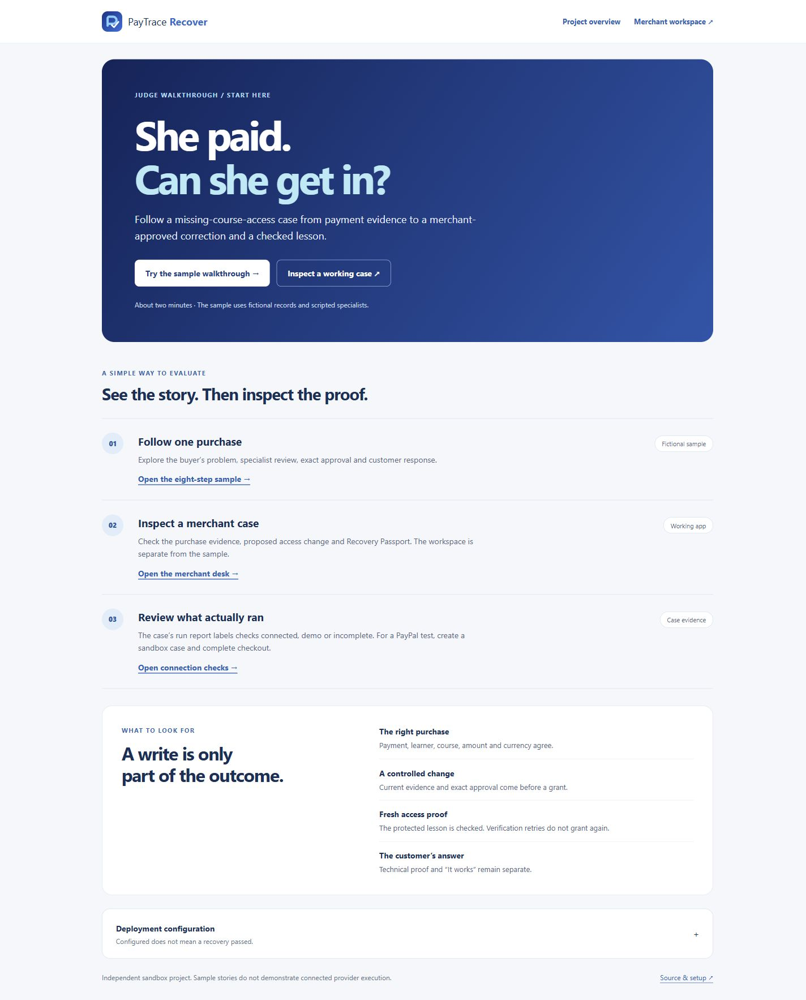
View full size ↗01 / THE WALKTHROUGH
Judge walkthrough
Full desktop page with the evaluation route and sample disclosure.
From the first missing-access report to a checked lesson, explore the screens that keep the merchant and customer informed.
Captured from fictional local demo cases. A passing demo lesson check is separate from connected PayPal evidence. Select any image to inspect the original.

View full size ↗Full desktop page with the evaluation route and sample disclosure.
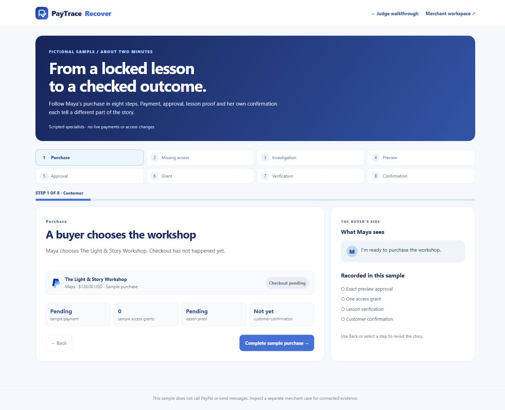
View full size ↗Eight-step fictional walkthrough before payment.
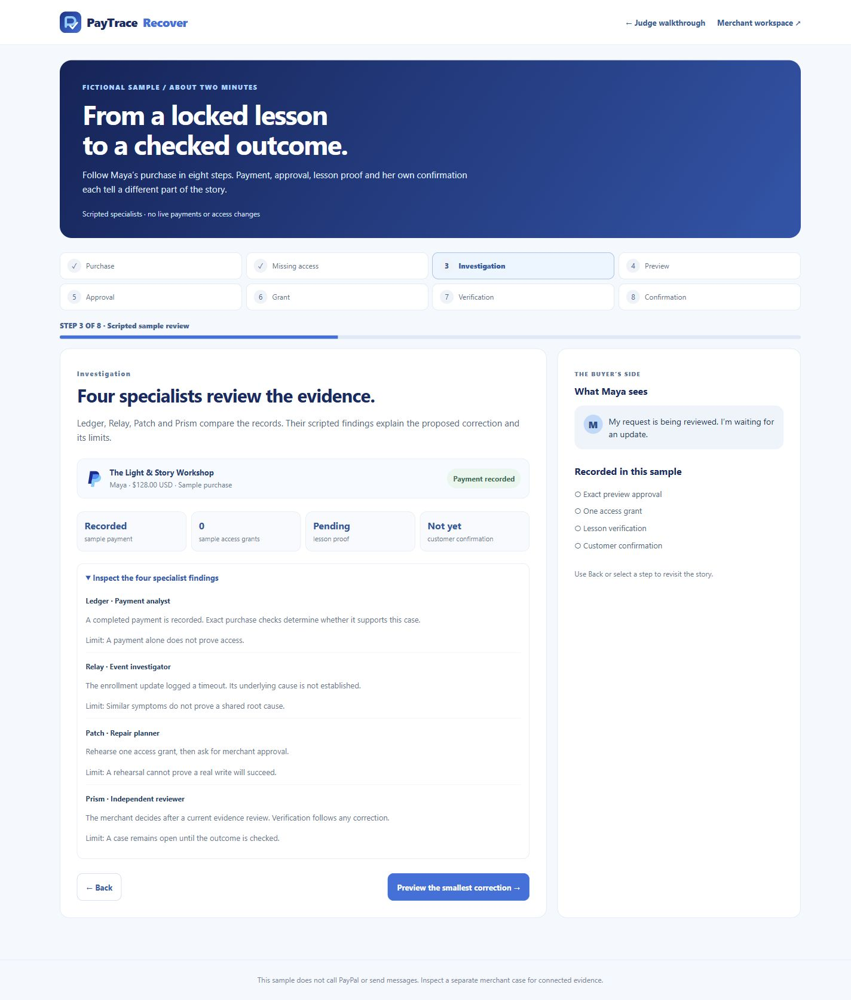
View full size ↗All four scripted findings expanded and readable.
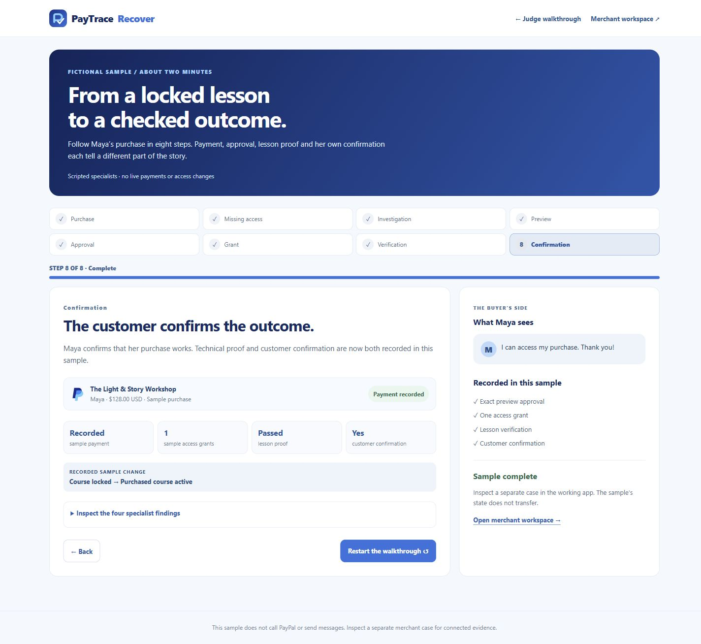
View full size ↗Fictional lesson proof and customer confirmation, labeled as a sample.
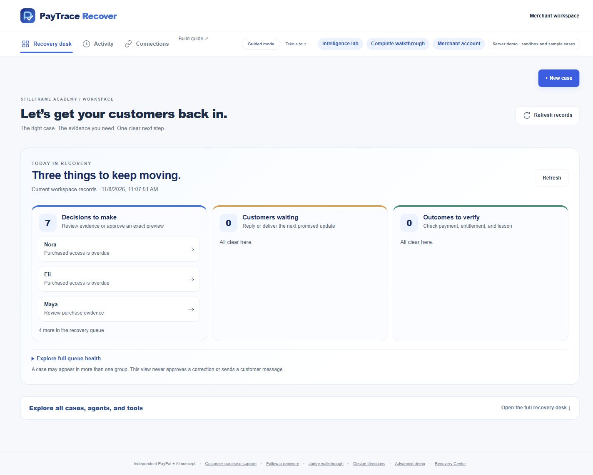
View full size ↗Three attention groups and clear workspace navigation.
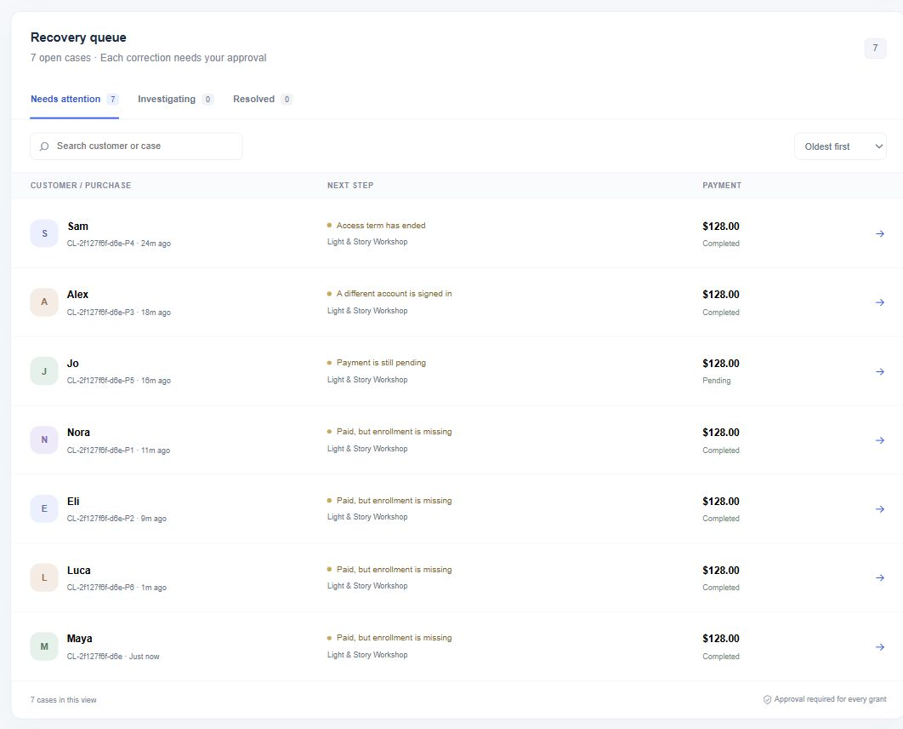
View full size ↗Focused crop with the complete queue, search, filters and case rows.
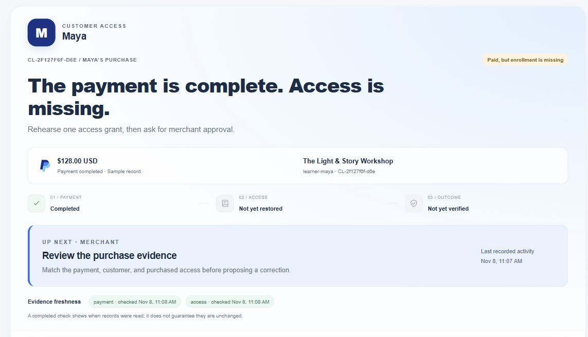
View full size ↗Complete purchase summary and next action before investigation.
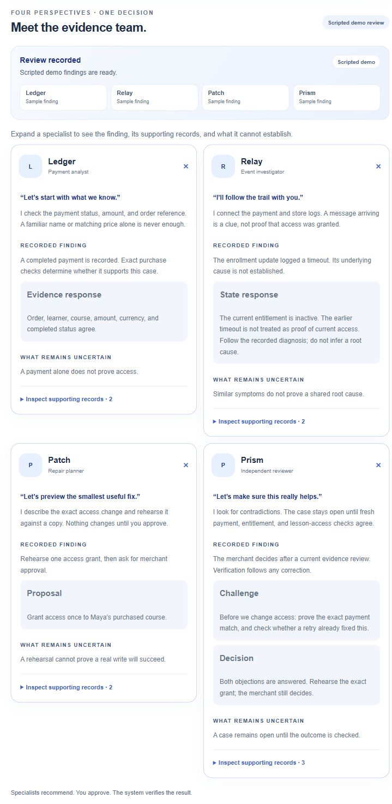
View full size ↗All four expanded specialist cards, uncertainty and source controls.
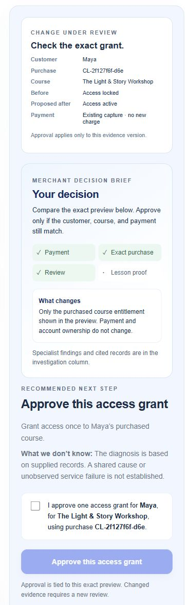
View full size ↗Purchase-specific preview, consent checkbox and disabled approval button before consent.
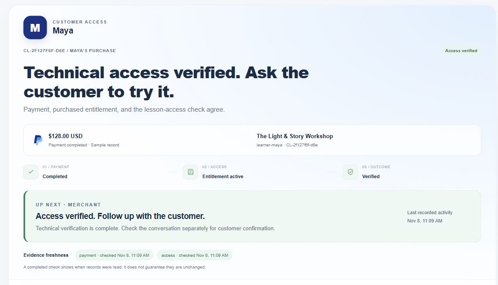
View full size ↗Actual passing local lesson check; this is demo evidence, not connected PayPal proof.
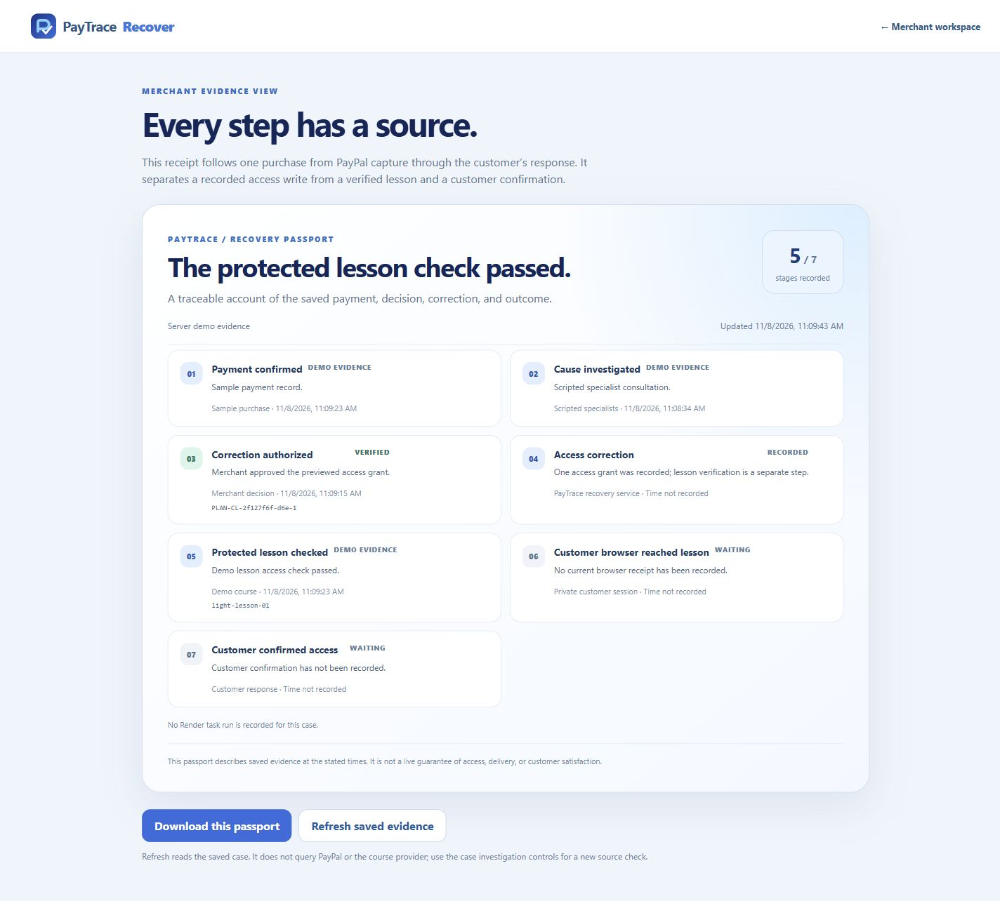
View full size ↗Five recorded stages. Browser receipt and customer confirmation remain waiting.
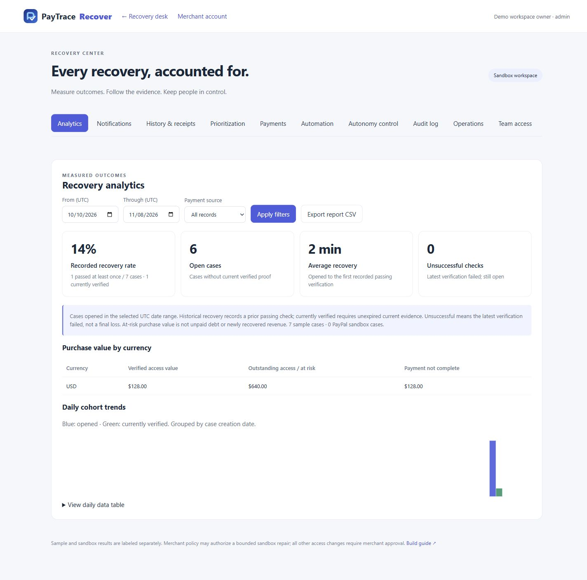
View full size ↗One historical/current verified demo case at capture time; sample and sandbox counts remain distinct.
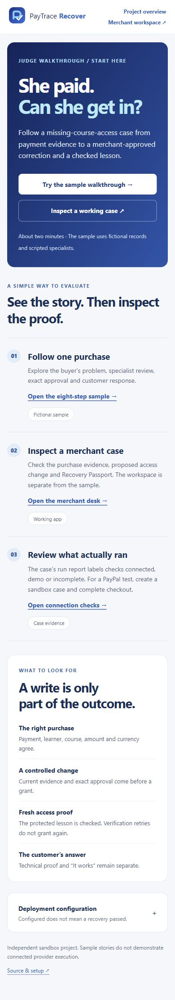
View full size ↗Full-width 390px responsive capture.
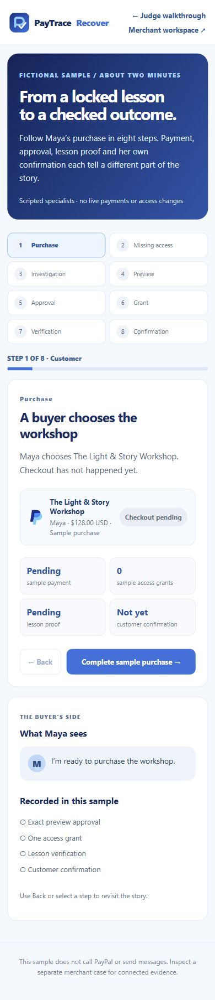
View full size ↗Full-width 390px responsive capture.
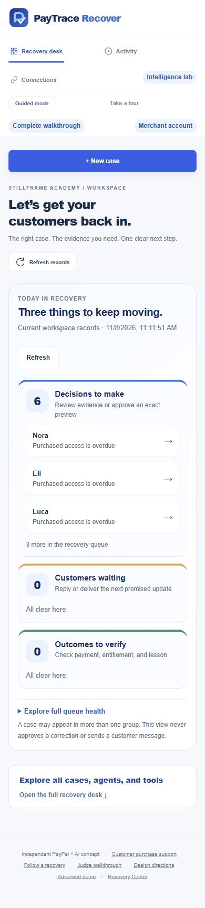
View full size ↗Full-width 390px responsive capture, after local verification.
The sample explains the story. The workspace shows the case evidence.